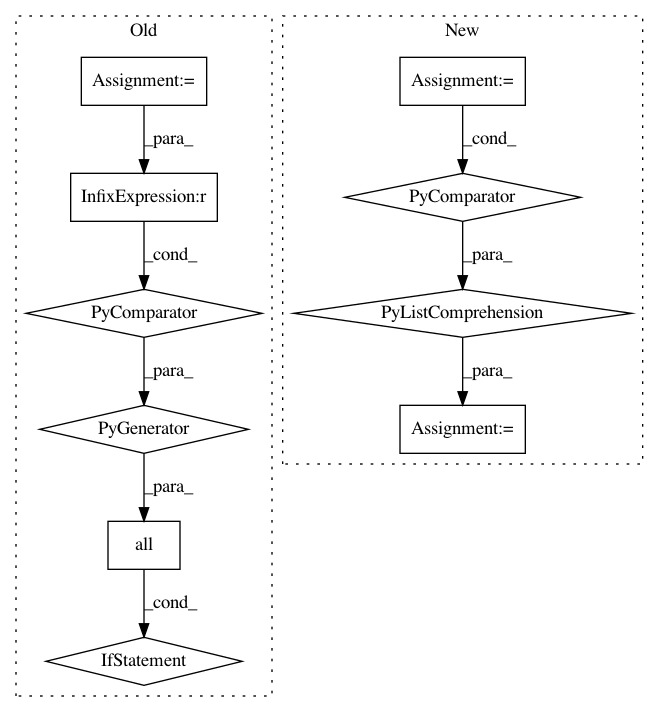

ef4353bd24b9d781c2dfa9cd2146d9b87e63b6f1,nn_dataflow/Scheduling.py,Scheduling,schedule_search,#Scheduling#Any#Any#,103
Before Change
condition.resource.dim_nodes,
options):
// Ifmap partitioning.
part_src = condition.part_src
if not all(sd <= mrsd for sd, mrsd
in zip(part_src.dim(), mem_region_src.dim)):
raise ValueError("Scheduling: ifmap partitioning {} is "
"invalid within memory region {}."
.format(part_src, str(mem_region_src)))
// Ofmap partitioning.
part_dst = Partition.get_ofmap_part(part, mem_region_dst)
// Partition NoC hop cost.
unit_nhops = Partition.part_layer_unit_nhops(
After Change
// Filter nodes. All memory nodes can store filters. Deduplicate.
filter_node_coord_list = [c for c in mem_region_src.node_iter()] \
+ [c for c in mem_region_dst.node_iter()]
filter_node_coord_list = list(set(filter_node_coord_list))
// Explore parallel partitioning schemes.
for part in Partition.gen_partition(self.layer, self.batch_size,
condition.resource.dim_nodes,
In pattern: SUPERPATTERN
Frequency: 3
Non-data size: 10
Instances
Project Name: stanford-mast/nn_dataflow
Commit Name: ef4353bd24b9d781c2dfa9cd2146d9b87e63b6f1
Time: 2017-05-01
Author: mgao12@stanford.edu
File Name: nn_dataflow/Scheduling.py
Class Name: Scheduling
Method Name: schedule_search
Project Name: home-assistant/home-assistant
Commit Name: 9f54bcc21b1744f2850a35e54903f3581d14badb
Time: 2015-12-23
Author: marhje52@kth.se
File Name: homeassistant/components/sensor/mysensors.py
Class Name:
Method Name: setup_platform
Project Name: IndicoDataSolutions/finetune
Commit Name: 2d41bb82695f1cc18333e6bcba3d1b00befad89e
Time: 2020-01-17
Author: benlt@hotmail.co.uk
File Name: finetune/target_models/sequence_labeling.py
Class Name: SequencePipeline
Method Name: text_to_tokens_mask